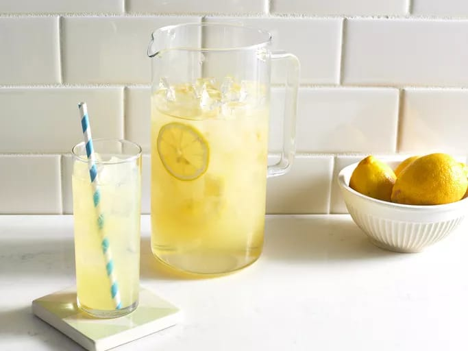

Lemonade
Prep time :
10 mins
Yield :
4
Ingredients
1 cup freshly squeezed lemon juice (about 4-6 lemons)
1 cup sugar
4 cups cold water
Ice cubes
Lemon slices (for garnish, optional)
Steps
In a small saucepan, combine 1 cup water and 1 cup sugar. Heat and stir until sugar dissolves to make a simple syrup. Let cool.
In a pitcher, combine lemon juice, simple syrup, and remaining 3 cups cold water. Stir well.
Add ice cubes and garnish with lemon slices if desired. Serve chilled.